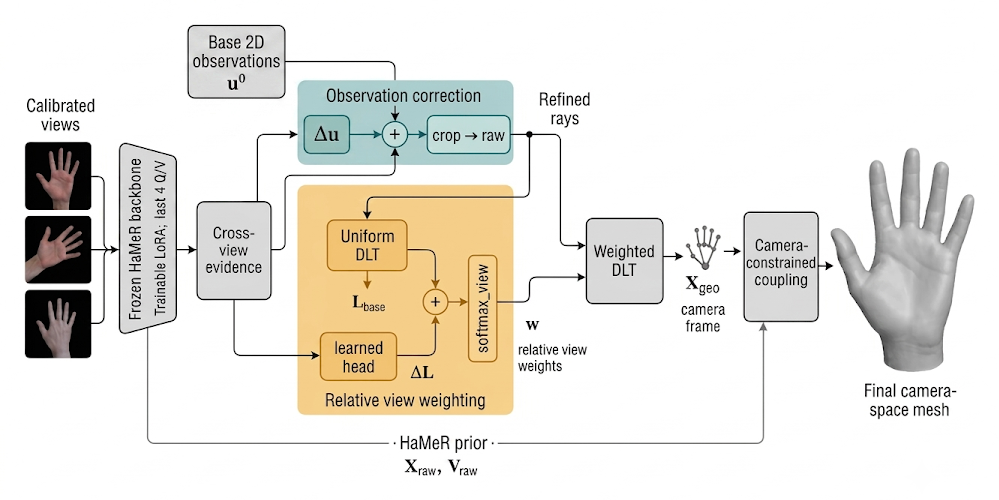

Form2Frame
Prior-Preserving Evidence Fusion for Multi-View Hand Reconstruction
Form2Frame places HaMeR and WiLoR hand meshes in a shared metric frame, then fuses complementary candidates across anatomical regions using geometric and visual evidence. A retained baseline mesh provides a fallback.
Evaluated on HanCo, DexYCB-MV, and HO3D-MV. DexYCB-MV: 4.398 mm MPVPE and 4.316 mm mesh MPJPE.